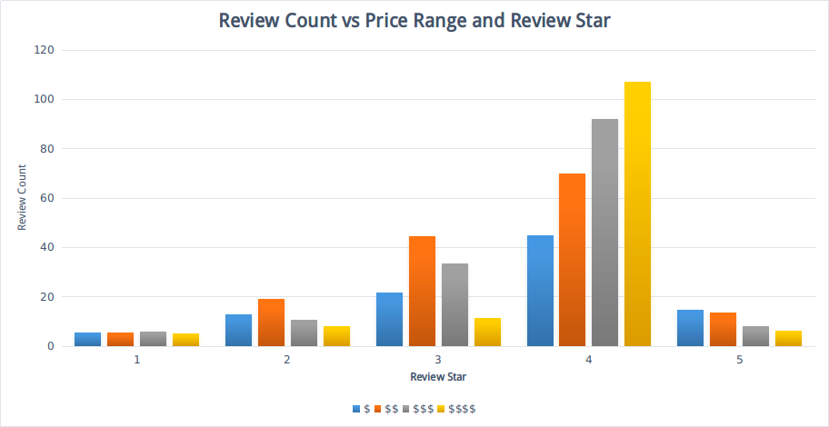
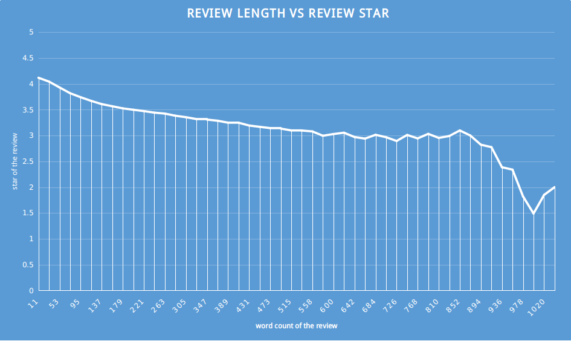

Welcome to GitHub Pages.
Reviews are important feedback business can improve the service quality, other customs can also benefit from them to make choices, especially the detailed reviews. My goal is by analyzing the reviews from yelp data set to figure out:
- What does the frequency of detailed review mean? / When will people more frequently leave long, detailed reviews?
- What does the length of detailed review mean? / When people writes a longer reviews than normal, what are their general attitude? Appreciation or criticism?
In analyzing reviews on yelp data. I was surprised to find that
When customer satisfaction is higher than normal (4 stars), the more expensive the food/dinner they take, the more frequently they are willing to leave reviews. people are more willing to share their experience. 
As the review goes longer, from the analysis, we can find that the customer satisfaction will decrease. Business should pay much attention when they find the long, detailed reviews on their yelp page, they are more likely to find imperfections in their services. 